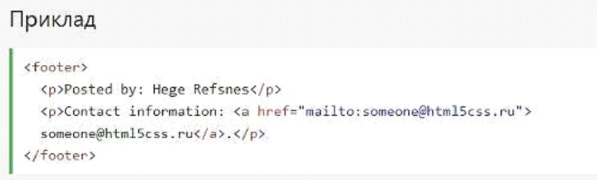

HTML5 Семантичні елементи
Семантичний елемент чітко описує його значення як для
браузера так і для розробника.
Приклади не семантичних елементів: <div> і <span>- нічого
не говорить про його вміст.
Приклади семантичних елементів: <form>, <table> і
<article>-чітко визначає його зміст.
Підтримка браузерів
Семантичні елементи HTML5 підтримуються у всіх сучасних
браузерах.
Крім того, ви можете "навчити" старих браузерів, як обробляти
"невідомі елементи".
Прочитайте про це в підтримці браузера HTML5
Нові семантичні елементи в HTML5
HTML5 пропонує нові семантичні елементи для визначення
різних частин веб-сторінки:
- <section>
- <article>
- <header>
- <footer>
HTML5 <section> елемент
Елемент <section> визначає розділ в документі.
Згідно з документацією в3к'с HTML5: "розділ представляє
собою тематичну угруповання контенту, зазвичай з
заголовком".
Домашня сторінка зазвичай може бути розділена на розділи
для ознайомлення, змісту і контактної інформації.
HTML5 <article> елемент
Елемент <article> визначає незалежний, автономний вміст.
Стаття повинна мати сенс самостійно, і вона повинна мати ,
можливість читати його незалежно від іншої частини веб-сайту.
Приклади того, де можна використовувати елемент <article>:
- Повідомлення на форумі
- блозі
- Газетна стаття
HTML5 <header> елемент
Елемент <header> задає заголовок для документа або розділу
Елемент <header> повинен використовуватися в якості контейнера
для вступного змісту.
В одному документі може бути кілька
елементів <header>. У наступному прикладі
визначається заголовок для статті:
HTML5 <footer> елемент
Елемент <footer> вказує нижній колонтитул для документа або розділу.
Нижній колонтитул зазвичай містить автора документа,
інформацію про авторське право, посилання на умови
використання, контактні дані і т.д.
В одному документі може бути кілька елементів <footer>.
